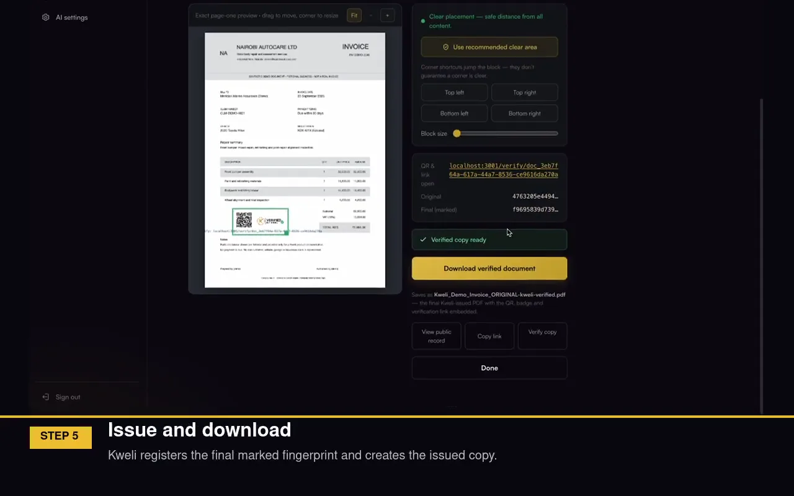

Know which document you can trust.
EAX Global is the company behind Kweli. An issuer registers a document, places its unique QR on the final file and gives the recipient a way to check that exact copy.
Working product · Sample documents · Recorded in the Kweli portal

Watch the portal walkthrough Register → QR → issue → verifyWatch a document become verifiable.
This is the working Kweli portal, recorded with sample documents. Follow one invoice from registration to its final QR-marked copy, then see how the recipient checks it.
The film continues with an altered-copy check and a batch issuance example.
Recorded product walkthrough with sample data. Verification establishes whether the file matches the issued version; it does not judge every statement inside it.
Explore Kweli Verify ↗A convincing PDF is still just a PDF.
Almost every important decision now runs on a digital file. A bank approves a facility against uploaded statements. An insurer settles a claim against an assessor's report. A buyer pays a supplier against a delivery note.
But files can be altered, duplicated, replaced or generated convincingly — and as those tools improve, a genuine-looking record proves less and less. The cost of relying on the wrong version falls on whoever trusted it.
Build from a document you can check.
An approved issuer registers the source document. Kweli creates a QR-linked proof; the issuer places the QR, then downloads the final issued file. A recipient can scan the QR to compare the issuer and recorded details, and check whether the digital file matches that final version.
That check is Kweli, EAX Global’s first product. Our longer-term work is to carry verifiable records into more workflows and organisations.
One working product. More workflows ahead.
Kweli Verify is the working product today. Claims is a pilot focus; supply, credentials and a future marketplace are directions we are developing, not services already rolled out.
Kweli Verify
Document integrity and authenticity — confirm a record is the genuine, unaltered file issued by a known organisation.
Kweli Claims
An independent integrity layer for insurance claims evidence, alongside existing claims systems.
Kweli Supply
Verification for supply-chain and trade documentation as it changes hands.
Kweli Credentials
Verification for certificates, licences and professional credentials.
EAX Marketplace
A trusted digital marketplace built on verified organisations, documents and transactions.
What exists today.
Kweli has a working issuer and verifier flow: register a source document, place its QR, issue the final file, then check its proof record and exact digital copy. Its public website shows the process and a local sample checker; the actual portal is a separate product environment.
We are taking that working flow into specific pilots, beginning with documents in insurance and laboratories.
Building something that depends on trust?
Whether you're an enterprise, an insurer, a financial institution, a partner or an investor — we'd like to hear how you think about verification.